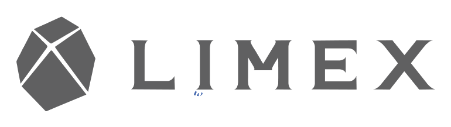

WHITEDOT × LIMEX — LAUNCH FILM
Born of LIMEX
A 40-second premium cinematic brand film — from mineral origin and limestone intelligence to real products and responsible adoption. Shaping a cleaner material future.
40.0s · 24fps 16:9 hero + 9:16 cut 8 scenes dark cinematic luxury
40-SECOND TIMELINE
0:00 0:08 0:18 0:25 0:31 0:40
SCENE BOARD

24-FILE PRODUCTION PACKAGE · QC PASS · 40.0s
README · director-treatment · master-storyboard · board-01…06 · shot-list-40sec · edit-decision-list · voiceover-script · onscreen-text · ai-image-prompts · ai-video-prompts · google-flow-transition-prompts · runway-seedance-veo-prompts · sound-design-and-music · color-grade-and-lookbook · asset-manifest · production-workflow · adobe-postproduction-workflow · final-master-prompt · quality-control-checklist · ad-timeline.json